Práctica 7: Sistemas diferenciales y en diferencias
Contents
Nota
Se tiene que MATLAB presenta una definición del escalón unitario heaviside(t), donde heaviside(0)=0.5, para versiones mayores o iguales a 2016 esto puede configurarse al valor que se quiera, en nuestro caso queremos heaviside(0)=1, esto se logra ejecutando la siguiente instrucción
sympref('HeavisideAtOrigin', 1);
de no ser posible establecer la configuración se tiene que tener en cuenta la definición de MATLAB.
Sistemas diferenciales (Transformada de Fourier)
Se utiliza el toolbox con herramientas de matemáticas símbolicas, para generar un programa que resuelve sistemas diferenciales de orden n mediante transformada de Fourier, el programa despliega: paso por paso la metodología de solución, la solución de la ecuación diferencial, y la gráfica tanto de la señal de entrada como de la señal de salida. El código programado es el siguiente
function fourier2016a(a,b,xi,t0) % a coeficientes de las derivadas de la salida menor a mayor [a_0, ..., a_n] % b coeficientes de las derivadas de la entrada menor a mayor [b_0, ..., b_m] % xi función de entrada en terminos de la variable simbolica t previamente % declarada en el command window % t0 tiempo final para graficar la solucion, la derivada, y la segunda % derivada % ejemplo: resolver y^(2)+2y^(1)+2y=x^(1)+2x con y^(1)(0)=0 % y(0)=0, x(0)=0, x(t)=exp(-t)u(t), para 5 segundos, se resuleve como % syms t % fourier2016a([2 2 1],[2 1],exp(-t)*heaviside(t),5) close all tam=size(a); tami=size(b); syms y(t) Y(w) x(t) X(w) Yy fp; syms edd edi edd=0; edi=0; for i=1:tam(2) edd=edd+a(i)*(j*w)^(i-1)*Y(w); end for i=1:tami(2) edi=edi+b(i)*(j*w)^(i-1)*X(w); end mensaje('APLICAMOS TRANSFORMADA DE FOURIER') pretty(edd) disp('=') pretty(edi) mensaje('SUBSTITUIMOS LA TRANSFORMADA DE LA ENTRADA') edi=subs(edi,X(w), fourier(xi)); pretty(edd) disp('=') pretty(edi) mensaje('DESPEJAMOS Y(w)') edd=collect(edd,Y(w)); edd=subs(edd,Y(w),Yy); eq1=edd==edi; disp('Y(w)=') edd=solve(eq1, Yy); pretty(edd) %%% Para versiones superiores a 2016 mensaje('DESARROLLAMOS LAS FRACCIONES PARCIALES DE Y(w)') disp('Y(w)=') pretty(partfrac(edd)) %%%% Si se ejecuta en 2015 o menor comentar las 3 lineas anteriores mensaje('Aplicamos transformada inversa, asi la solución es') disp('y(t)=') y(t)=ifourier(edd,t); pretty(y(t)) figure (1) hFig = figure(1); set(hFig, 'Position', [0 0 900 900]) axes1 = axes('Parent',hFig,'FontWeight','bold','FontSize',16); tiempo=0:0.01:t0; fplot(xi,[0, t0],'b','LineWidth',2) hold on fplot(y,[0,t0],'r','LineWidth',2) legend('Entrada x(t)','Salida y(t)','Location','Best') xlabel('tiempo','FontWeight','bold','FontSize',16) title('Entrada y Respuesta del sistema','FontWeight','bold','FontSize',16) grid on end function mensaje(texto) disp( ' ') disp(texto) disp( ' ') end
Entonces si se quiere resolver la ecuación diferencial
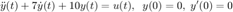
Se ejecutan las siguientes instrucciones, aquí es importante recordar que transformada de Fourier solo resuelve ecuaciones diferenciales donde las condiciones iniciales son nulas.
syms t
fourier2016a([10 7 1],[1],heaviside(t),10)
APLICAMOS TRANSFORMADA DE FOURIER
2
10 Y(w) - w Y(w) + w Y(w) 7i
=
X(w)
SUBSTITUIMOS LA TRANSFORMADA DE LA ENTRADA
2
10 Y(w) - w Y(w) + w Y(w) 7i
=
1i
pi dirac(w) - --
w
DESPEJAMOS Y(w)
Y(w)=
1i
pi dirac(w) - --
w
----------------
2
- w + w 7i + 10
DESARROLLAMOS LAS FRACCIONES PARCIALES DE Y(w)
Y(w)=
w 1i 7
---- - pi dirac(w) + --
1i 10 10
- ---- - -----------------------
10 w 2
- w + w 7i + 10
Aplicamos transformada inversa, asi la solución es
y(t)=
/ pi pi sign(t) pi exp(-2 t) (sign(t) + 1) pi exp(-5 t) (sign(t) + 1)
| -- + ---------- - -------------------------- + --------------------------
\ 10 10 6 15
pi exp(-2 t) dirac(t) pi exp(-5 t) dirac(t) \
- --------------------- + --------------------- |/(2 pi)
15 15 /

Se observa que la expresión resultante no esta totalmente simplificada, posiblemente con algunas modificaciones de las instrucciones el resultado pueda desplegarse de manera simplificada, también se observa que las fracciones parciales no estan totalmente desarrolladas, la manipulación de símbolos en MATLAB no es lo suficientemente robusta, pero es buena. Ahora observemos el resultado que se ha optenido en el siguiente enlace
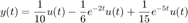
En la gráfica se puede observar consistencia, pues observamos que cuando 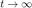 el resultado tiende a 
Sistemas diferenciales (Transformada de Laplace)
Se utiliza el toolbox con herramientas de matemáticas símbolicas, para generar un programa que resuelve sistemas diferenciales de orden n mediante transformada de Laplace y condiciones iniciales en 0 por la izquierda (cero menos), el programa despliega: paso por paso la metodología de solución, la solución de la ecuación diferencial, y la gráfica tanto de la señal de entrada como de la señal de salida y una gráfica de la primera y segunda derivada de la salida. El código programado es el siguiente
function laplace2016a(a,b,ciy,cix,xi,t0) % a coeficientes de las derivadas de la salida menor a mayor [a_0, ..., a_n] % b coeficientes de las derivadas de la entrada menor a mayor [b_0, ..., b_m] % ciy condiciones iniciales de la salida de menor a mayor [y(0), y(0)^(n-1)] % cix condiciones iniciales de la entrada de menor a meyor [x(0), x^(m-1)(0)] % xi función de entrada en terminos de la variable simbolica t previamente % declarada en el command window % t0 tiempo final para graficar la solucion, la derivada, y la segunda % derivada % ejemplo: resolver y^(3)+y^(2)+2y^(1)+2y=3x^(2)-x^(1)+2x con y^(2)(0)=1 y^(1)=3 % y(0)=2, x(0)=0 x^(1)=1, x(t)=exp(-t)cos(t)u(t), para 10 segundos, se resuleve como % syms t % laplace2016a([2 2 1 1],[2 -1 3],[2 3 1],[0 1],exp(-t)*cos(t)*heaviside(t),10) close all tam=size(a); tami=size(b); syms y(t) Y(s) x(t) X(s) Yy fp; syms edd edi edd=0; edi=0; for i=1:tam(2) edd=edd+a(i)*s^(i-1)*Y(s); for k=1:i-1 edd=edd-a(i)*(s^(i-1-k)*ciy(k)); end end for i=1:tami(2) edi=edi+b(i)*s^(i-1)*X(s); for k=1:i-1 edi=edi-b(i)*(s^(i-1-k)*cix(k)); end end mensaje('APLICAMOS TRANSFORMADA DE LAPLACE y subtituimos condiciones iniciales') pretty(edd) disp('=') pretty(edi) mensaje('SUBSTITUIMOS LA TRANSFORMADA DE LA ENTRADA') edi=subs(edi,X(s), laplace(xi)); pretty(edd) disp('=') pretty(edi) mensaje('DESPEJAMOS Y(s)') edd=collect(edd,Y(s)); edd=subs(edd,Y(s),Yy); eq1=edd==edi; disp('Y(s)=') edd=solve(eq1, Yy); pretty(edd) %%% Para versiones superiores a 2016 mensaje('DESARROLLAMOS LAS FRACCIONES PARCIALES DE Y(s)') disp('Y(s)=') pretty(partfrac(edd)) %%%% Si se ejecuta en 2015 o menor comentar las 3 lineas anteriores mensaje('Aplicamos transformada inversa, asi la solución es') disp('y(t)=') y(t)=ilaplace(edd); pretty(y(t)) dy(t)=diff(y,t); ddy(t)=diff(dy,t); figure (1) hFig = figure(1); set(hFig, 'Position', [0 0 900 900]) axes1 = axes('Parent',hFig,'FontWeight','bold','FontSize',16); tiempo=0:0.01:t0; subplot(2,1,1) fplot(xi,[0, t0],'b','LineWidth',2) hold on fplot(y,[0,t0],'r','LineWidth',2) legend('Entrada x(t)','Salida y(t)','Location','Best') xlabel('tiempo','FontWeight','bold','FontSize',16) title('Entrada y Respuesta del sistema','FontWeight','bold','FontSize',16) grid on subplot(2,1,2) fplot(dy,[0,t0],'g','LineWidth',2) hold on title('Primera y segunda derivada de la salida','FontWeight','bold','FontSize',16) fplot(ddy,[0,t0],'m','LineWidth',2) legend('dy(t)/dt','d^2y(t)/d^2t','Location','Best') xlabel('tiempo','FontWeight','bold','FontSize',16) grid on end function mensaje(texto) disp( ' ') disp(texto) disp( ' ') end
Entonces si se quiere resolver la ecuación diferencial
Se ejecutan las siguientes instrucciones,
syms t
laplace2016a([10 7 1],[1],[0,0],[0],heaviside(t),10)
APLICAMOS TRANSFORMADA DE LAPLACE y subtituimos condiciones iniciales
2
10 Y(s) + 7 s Y(s) + s Y(s)
=
X(s)
SUBSTITUIMOS LA TRANSFORMADA DE LA ENTRADA
2
10 Y(s) + 7 s Y(s) + s Y(s)
=
1
-
s
DESPEJAMOS Y(s)
Y(s)=
1
----------------
3 2
s + 7 s + 10 s
DESARROLLAMOS LAS FRACCIONES PARCIALES DE Y(s)
Y(s)=
1 1 1
---------- - --------- + ----
15 (s + 5) 6 (s + 2) 10 s
Aplicamos transformada inversa, asi la solución es
y(t)=
exp(-5 t) exp(-2 t) 1
--------- - --------- + --
15 6 10
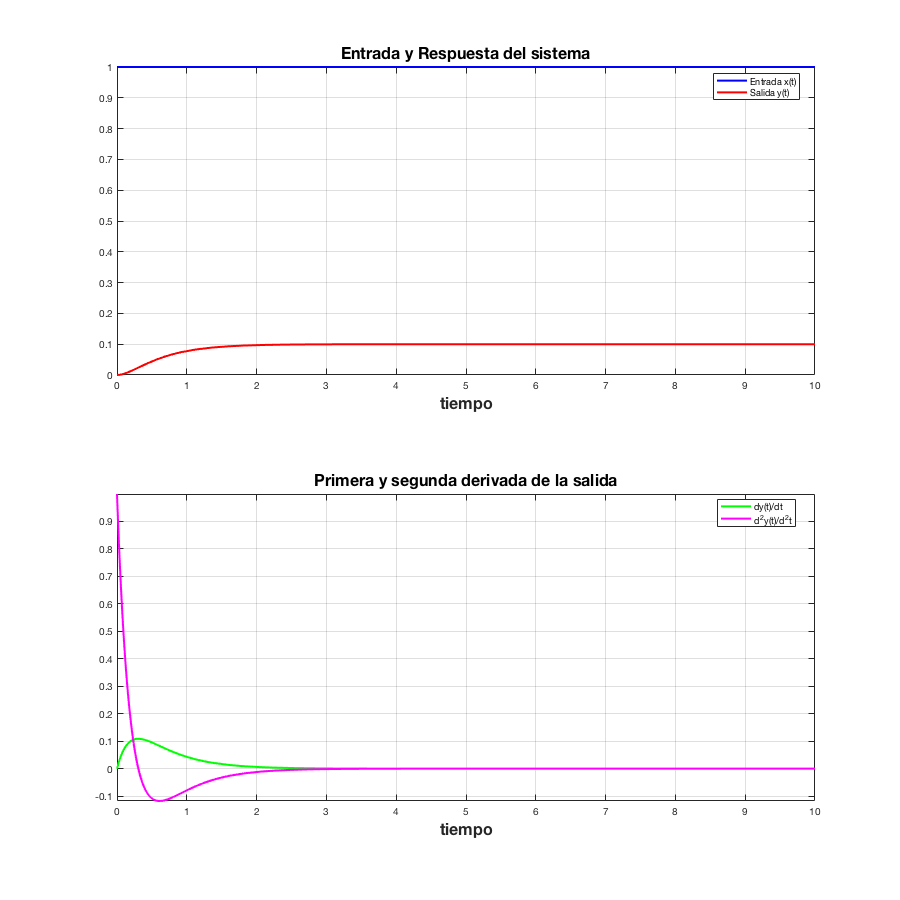 Se observa que la expresión resultante esta totalmente simplificada, posiblemente por que es este caso no hay manipulaciópn de deltas de Dirac, es general la manipulación de símbolos en MATLAB no es lo suficientemente robusta, pero es buena. Ahora observemos el resultado que se ha optenido en el siguiente enlace
Así se lográ observar que el resultado es identico
Sistemas en diferencias
Se utiliza el toolbox con herramientas de matemáticas símbolicas, para generar un programa que resuelve sistemas en diferencias de orden n en formato de adelanto mediante transformada Z y las condiciones iniciales se indican a partir de cero, el programa despliega: paso por paso la metodología de solución, la solución de la ecuación en diferecnias, y la gráfica tanto de la señal de entrada como de la señal de salida. El código programado es el siguiente
function zeta2016a(a,b,ciy,cix,xi,n0) % a coeficientes de las traslaciones de la salida mayor a menor [a_n, ..., a_0] % b coeficientes de las traslaciones de la entrada mayor a menor [b_m, ..., b_0] % ciy condiciones iniciales de la salida de mayor a menor [y(n-1), y(0)] % cix condiciones iniciales de la entrada de mayor a menor [x(m-1), x(0)] % xi funcion de entrada en terminos de la variable simbolica n previamente % declarada en el command window % n0 tiempo final para graficar la solucion, y la entrada % ejemplo: resolver %6y[n+2]+5y[n+1]+y[n]=x[n+1]+x[n] con y[1]=2 y[0]=1 %x[0]=0.5, x[n]=u[n], para 30 segundos, se resuleve como % syms n % zeta2016a([6 5 1],[ 1, 1],[2 1],[0.5],heaviside(n),30) close all tam=size(a); tami=size(b); syms y(n) n z Y(z) x(n) X(z) Yy fp; syms edd edi edd=0; edi=0; for i=1:tam(2) yd(i)=y(n+tam(2)-i); edd=edd+ a(i)*ztrans(yd(i)); end for i=1:tami(2) xd(i)=x(n+tami(2)-i); edi=edi+ b(i)*ztrans(xd(i)); end mensaje('APLICAMOS TRANSFORMADA ZETA ') edd=subs(edd,ztrans(y(n),n,z), Y(z)); edi=subs(edi,ztrans(x(n),n,z), X(z)); pretty(edd) disp('=') pretty(edi) mensaje('SUBSTITUIMOS CONDICIONES INICIALES') for j=1:tami(2)-1 edi=subs(edi,x(tami(2)-1-j),cix(j)); end for j=1:tam(2)-1 edd=subs(edd,y(tam(2)-1-j),ciy(j)); end pretty(edd) disp('=') pretty(edi) mensaje('SUBSTITUIMOS LA TRANSFORMADA DE LA ENTRADA') edi=subs(edi,X(z), ztrans(xi)); pretty(edd) disp('=') pretty(edi) mensaje('DESPEJAMOS Y(z)') edd=collect(edd,Y(z)); edd=subs(edd,Y(z),Yy); eq1=edd==edi; disp('Y(z)=') edd=solve(eq1, Yy); pretty(edd) %%% Para versiones superiores a 2016 mensaje('DESARROLLAMOS LAS FRACCIONES PARCIALES DE Y(z)') disp('Y(z)=') pretty(partfrac(edd)) %%%% Si se ejecuta en 2015 o menor comentar las 3 lineas anteriores mensaje('Aplicamos transformada inversa, asi la solucion es') disp('y(n)=') y(n)=iztrans(edd); pretty(y(n)) figure (1) hFig = figure(1); set(hFig, 'Position', [0 0 900 900]) axes1 = axes('Parent',hFig,'FontWeight','bold','FontSize',16); tiempo=0:1:n0; stem(tiempo,subs(xi,n,tiempo),'b','LineWidth',2) hold on stem(tiempo,subs(y(n),n,tiempo),'r','LineWidth',2) legend('Entrada x[n]','Salida y[n]','Location','Best') xlabel('tiempo','FontWeight','bold','FontSize',16) title('Solucion de la ecuacion en diferencias ','FontWeight','bold','FontSize',16) grid on end function mensaje(texto) disp( ' ') disp(texto) disp( ' ') end
Por ejemplo si se quiere resolver la siguiente ecuación en diferencias
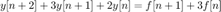
con 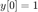, 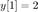, 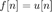, aquí 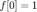 por la deficinición de 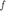, se resuleve de la siguiente manera para 5 unidades de tiempo
syms n
zeta2016a([1 3 2],[1 3],[2 1],[1],heaviside(n),5)
APLICAMOS TRANSFORMADA ZETA
2 2
2 Y(z) + z Y(z) - 3 z y(0) - z y(1) + 3 z Y(z) - z y(0)
=
3 X(z) - z x(0) + z X(z)
SUBSTITUIMOS CONDICIONES INICIALES
2 2
2 Y(z) - 5 z + z Y(z) + 3 z Y(z) - z
=
3 X(z) - z + z X(z)
SUBSTITUIMOS LA TRANSFORMADA DE LA ENTRADA
2 2
2 Y(z) - 5 z + z Y(z) + 3 z Y(z) - z
=
3 / 1 \
----- - z + z | ----- + 1 | + 3
z - 1 \ z - 1 /
DESPEJAMOS Y(z)
Y(z)=
3 2
z + 4 z - z
- -------------------
3 2
- z - 2 z + z + 2
DESARROLLAMOS LAS FRACCIONES PARCIALES DE Y(z)
Y(z)=
2 2 10
--------- - ----- + --------- + 1
3 (z - 1) z + 1 3 (z + 2)
Aplicamos transformada inversa, asi la solucion es
y(n)=
n
n 5 (-2) 2
2 (-1) - ------- + -
3 3
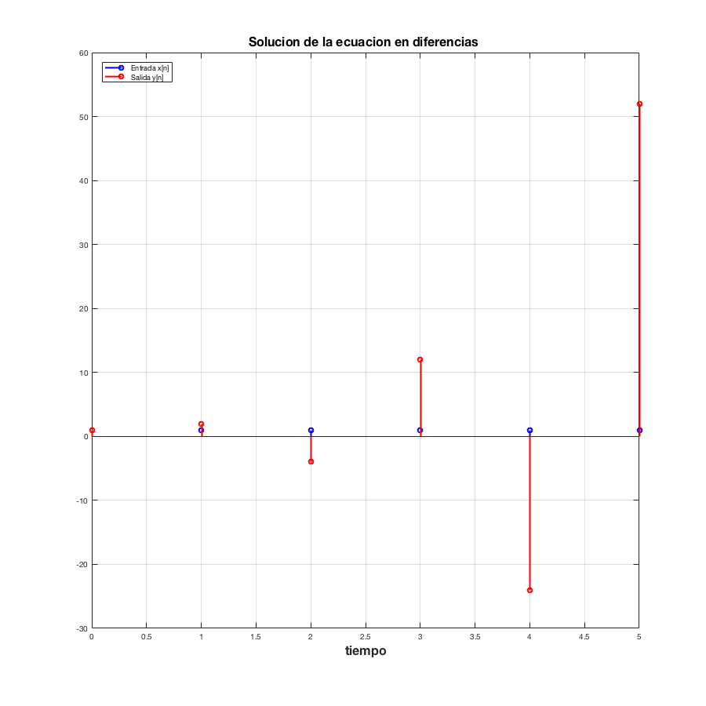 Entregables sistemas diferenciales
Para sistemas diferenciales realiza un programa con las siguientes características
- Muestra la función de transferencia del sistema
- Muestra la respuesta al impulso (simbólico, gráfica)
- Muestra la respuesta a entrada cero (simbólico, gráfica)
- Muestra la respuesta a estado cero (simbólico, gráfica)
- Muestra la respuesta total (simbólico, gráfica)
- La respuesta total al escalón con condiciones iniciales 0 (simbólico, gráfica)
- Usando subplot, depliega una figura con 5 gráficas
Observa que los entregables pueden resolverse (solvo la función de transferencia) con llamadas a la funciones presentadas en esta publicación
Nota: Ejecuta los ejemplos descritos dentro de los comentarios de cada código para que observes el uso de estos
Entregables sistemas en diferencias
Para sistemas diferenciales realiza un programa con las siguientes características
- Muestra la función de transferencia del sistema
- Muestra la respuesta al impulso (simbólico, gráfica, ver KroneckerDelta)
- Muestra la respuesta a entrada cero (simbólico, gráfica)
- Muestra la respuesta a estado cero (simbólico, gráfica)
- Muestra la respuesta total (simbólico, gráfica)
- La respuesta total al escalón con condiciones iniciales 0 (simbólico, gráfica)
- Usando subplot, depliega una figura con 5 gráficas
Observa que los entregables pueden resolverse (solvo la función de transferencia) con llamadas a la funciones presentadas en esta publicación
Se entrega una publicación en html de tu desarrollo y se probará para un problema específico.
El código de esta publicación lo puedes encontrar en el siguiente enlace